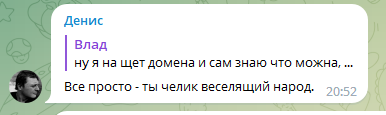

БОЯРСКИЙ КОДЕКС ЧЕСТИ
1.0 Бояр всегда прав.
1.1 Если бояр не прав - смотрите пункт 1.0 .
1.2 Бояр не принимает оскарбления от простолюдинов.
1.3 Бояр всегда начинает вопрос со слов "Бояри не велите казнить - велите миловать. Слово молвить нужно!".
1.4 Не царское это дело - без ошибок писать.
1.5 Бояр не принимает оскарбления от простолюдинов
1.6 Боярам запрещается говорить простыми словами — используйте только сложные синонимы и тщательно избегайте ясности!
1.7 Запрещается боярам говорить с простыми смертными, если они не наделены поэтическим даром и способностью рифмовать каждое слово.
1.8 Боярам обязательно хранить золотые рыбки в каждом аквариуме своего имения, но разговаривать с ними только по-французски.
1.9 Боярам обязательно носить на шее медальон с фотографией своей любимой картошки.
2.0 Запрещается боярам гулять без сопровождения штата клоунов и акробатов.
2.1 Бояры обязаны проводить тайное голосование среди своих слуг о том, кто из них получит звание "Самый уважаемый горшочник".
2.2 Запрещается боярам использовать обычные автомобили — только золотые кареты с привязанными единорогами.
2.3 Боярам обязательно нужно хранить в своем замке дракона, но кормить его только биологически чистыми дамасскими яблоками.
2.4 Запрещается боярам есть мороженое — только лизать снежки в январе, чтобы подчеркнуть свою изысканность.
2.5 Запрещается боярам купаться в обычной воде — только ванна должна быть заполнена вином, а окружать их должны дельфины с коронами.
2.6 Боярам обязаны вступить в Ассоциацию "Спящих лентяев" и ежегодно принимать участие в соревновании по занятию бездельем.
2.7 Боярам запрещается дышать обычным воздухом — только эфиром, чтобы подчеркнуть их высшую природу.
2.8 Запрещается боярам есть обычный хлеб — только тосты, поджаренные лазерным лучом.
2.9 Запрещается боярам говорить простыми предложениями — каждая фраза должна быть зашифрована с помощью кодового языка древних эльфов.
| Аватарка | Имя | Звания | Социальный кредит | Telegram |
|---|---|---|---|---|

|
Красавчик | Бояр | overДохрина | перейти |

|
Еще красавчик | Бояр | 999 | перейти |
|
|
D D | Бояр | 100 | перейти |

|
Тупая инфузория | Бояр | 100 | перейти |
|
|
idk | Бояр | 100 | перейти |
| Аватарка | Имя | Telegram | Досье |
|---|---|---|---|
| Алексей Попов | перейти | также известен как «Константа», — главный контролёр, а позже и единственный руководитель «Провиденса», лидер Вестников и секретарь «Партнёров». Владеет 5-тю нефтиными. Враг бояров. Устраивал массовые баны бояров в telegram канале https://t.me/nodejs_ru . Он тщательно уничтожил все следы своего прошлого, чтобы никто его не заметил и не нашел. Втайне от руководства Агентства курировал эксперименты по клонированию и генетике анти-бояров. | |

|
Денис | перейти |
Однажды в далеком княжестве произошла история, связанная с провинившимся холопом по имени Динис. Этот холоп, кажется, родился под звездной созвездием безрассудства и некоего заблуждения. Неизвестно, что происходило в его маленьком черепе, но он решил оскорбить самого могучего и уважаемого бояра во всем княжестве.
О, Динис, этот холоп! Он не только не почитал и не боялся бояра, но и решил выразить свою нелестную оценку его достоинству. Он оказался столь отважным, что решил превратить оскорбления в своеобразное искусство. Какие же слова он подобрал! Сочные, цветные, проникновенные. Он стал сравнивать бояра с попрыгунчиком, который постоянно виляет своей половинкой души, несмотря на все поклоны и почеты, которые ему предоставлялись.
Но даже такая неожиданная фантазия Диниса не прошла незамеченной. Великий бояр, который обычно заслуживал похвалу и восхищение, был поражен и весьма обижен такими глупыми и неподобающими словами. Он решил наказать Диниса, чтобы научить его уважать высших чиновников и не лезть в их святая святых со своими изощренными и непристойными оскорблениями.
Бояр организовал суд над Динисом, в котором все жители княжества с нетерпением ожидали вынесения приговора. Но бояр был мудрым и щедрым человеком. Он решил использовать собственные остроумные навыки и иронию для наказания холопа.
Суд заседал великолепно украшенным залом, где каждая деталь говорила о богатстве и власти бояра. Динис, весь испуганный и униженный, стоял перед бояром, который, казалось, облеченным весьма странным облачением, напоминающим павлиньи перья. Словно играя в театр, бояр начал свою речь, надуваясь словами и раздувая свою значимость до небес.
"О, уважаемый Динис! Великий герой оскорблений и кунсткамеры! Твое мастерство оскорблять нас, великих бояров, просто потрясающе! Какое богатство слов и метафор ты используешь, чтобы выразить свое превосходство! Наши умы и сердца трепещут от исполнения твоих эпических оскорблений. Но, к сожалению, такое величие должно быть ограничено и наказано."
Бояр приготовил своеобразное наказание для Диниса. Он решил, что холоп должен носить на голове шляпу с надписью "Великий оскорбитель бояров". Таким образом, каждый человек, с которым Динис встречался, знал о его злодеянии и мог насладиться его искусством оскорбления. Он стал популярностью во всем княжестве - маленький холоп с большой шляпой и еще большей репутацией.
Таков был конец истории о Динисе, холопе, который нашел себе приключения на свою голову буквально. Эта история служит напоминанием всем о том, что даже самые смешные и ироничные оскорбления могут привести к непредсказуемым последствиям. Будьте осторожны в своих словах и помните, что уважение к другим всегда будет лучшей стратегией в суровом мире княжества.


|

|
Максим | перейти | Жил-был Максим, ловкий обманщик и мастер маскировки. Он скрывал свое истинное лицо за воображаемой величиной и престижем. На своих странствиях он с легкостью втягивал наивных жителей королевства в свои коварные схемы. Однажды, Максим решил притвориться создателем великого "Боярского кодекса" – свода законов, которые, как он утверждал, должны были улучшить жизнь всех бояр и дворян в королевстве. Он рассказывал ложные истории о своих встречах с выдающимися боярами, о советах мудрецов и своем важном вкладе в создание кодекса. Но не все так просто. Его коварные действия не могли остаться незамеченными. Один из оскорбленных бояр навел следы, разоблачил Максима и раскрыл его злодеяния. Оказавшись перед судом, Максима осудили за его обманы и лживые утверждения. Бояре и жители королевства восприняли разоблачение с огромным облегчением. Разрушен был иллюзорный образ Максима как создателя великого "Боярского кодекса". Вместо восхищения, его имя стало символом коварства и обмана. Максима наказали со всей строгостью закона. Он был выслан из королевства, чтобы его злодеяния не причиняли больше вреда. Его лживые истории утратили свою силу, а его слава обернулась позором и унижением. Так закончилась история Максима – обманщика, который умел обманывать доверчивых и строить вымышленные крохотные миры. Он заплатил за свои злодеяния и стал предостережением для тех, кто может быть замешан в сетях лжи и обмана. И его имя осталось записано в истории королевства как печальное напоминание о том, что злодейства и ложь в конечном итоге приводят к падению и разочарованию. |